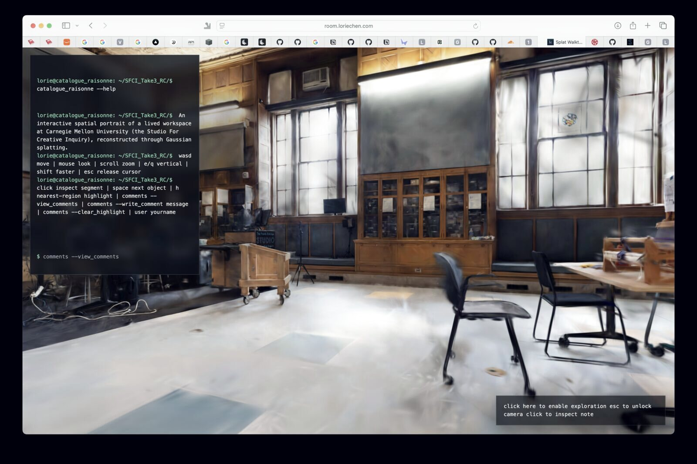
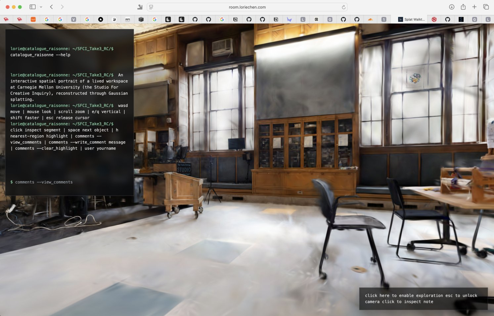
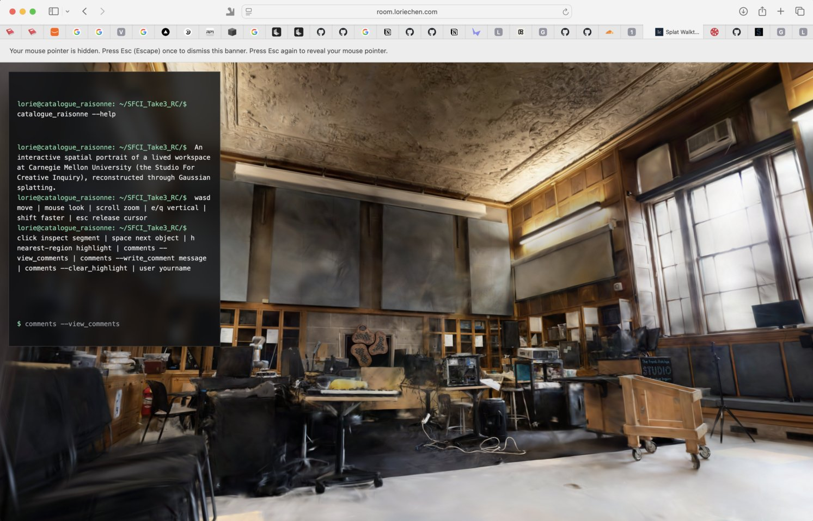
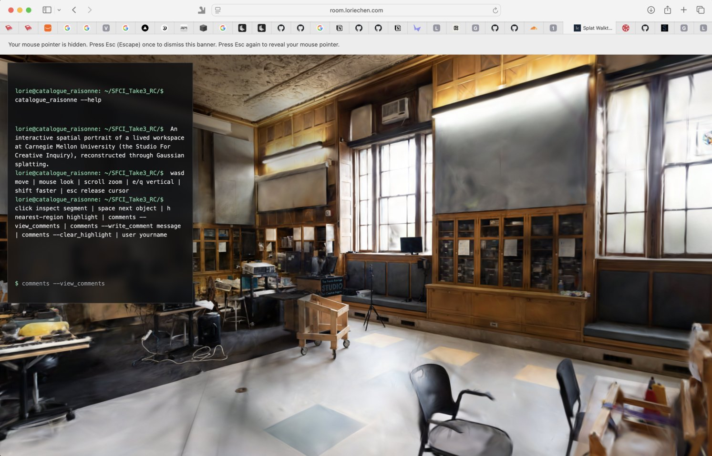

catalogue raisonné
CMU’s Studio for Creative Inquiry as a walkable, searchable archive.

The Studio for Creative Inquiry is a lab at Carnegie Mellon for experimental work across art, science and technology, and like any working studio it accumulates: equipment, prototypes, boxes, leftovers from projects, things placed, moved, replaced and forgotten. The arrangement of the room is a running record of everything that has happened in it. I scanned it to see whether that record could be read.
A catalogue raisonné is the complete, annotated list of an artist’s works. Here the subject is a room. The project sits with Tracey Emin’s My Bed and Gala Porras-Kim’s archival practice: the idea that a space, documented thoroughly enough, becomes a primary source.

Making a room legible
Capturing the studio was the easy part: Scaniverse on an iPhone (LiDAR and visual SLAM) for one pass, raw Fujifilm X-T5 photographs for another, each trained into a Gaussian splat.
Making it legible was harder. I wanted every object to be findable without labeling it by hand, surfaced through the geometry of the space itself. The segmentation weighs surface normals at 2.5× position to find object boundaries in a densely packed room, then uses HDBSCAN clustering, CLIP for searching by association, and SAM for masks. Hidden point removal suppresses what you shouldn’t be able to see through, and hand-drawn boxes fix the places where the models got it wrong.

The interface avoids gallery conventions. You walk through in first person and query the room like a filesystem, with typewriter reveals, so objects turn up as evidence rather than as things on plinths.

What it showed
Fully automatic clustering confused overlapping objects and left floating fragments, and hand-written labels erased the ambiguity that made the archive interesting. The best result came from letting geometry and models do the first pass, and correcting only where it mattered.
Spatial archives need interfaces for inquiry, not just photorealistic walkthroughs: ways to search by association, move between an object and the whole room, and leave some things uncertain instead of forcing them into a fixed taxonomy.
Live experience ↗ · Video ↗ · Substack write-up ↗